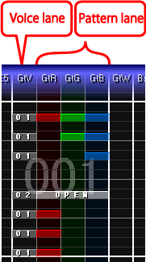

| Basic operations |
|---|
| Put chips for the guitar/bass |

You can make Guitar/Bass scores using two type of lanes ... "Voice lane" and "Pattern lanes".
The lane to specify the sound chip which will be playbacked. The usage is the same as the drums lanes.
The lane to specify RGB patterns.
To specify OPEN pattern, do Ctrl + left click.